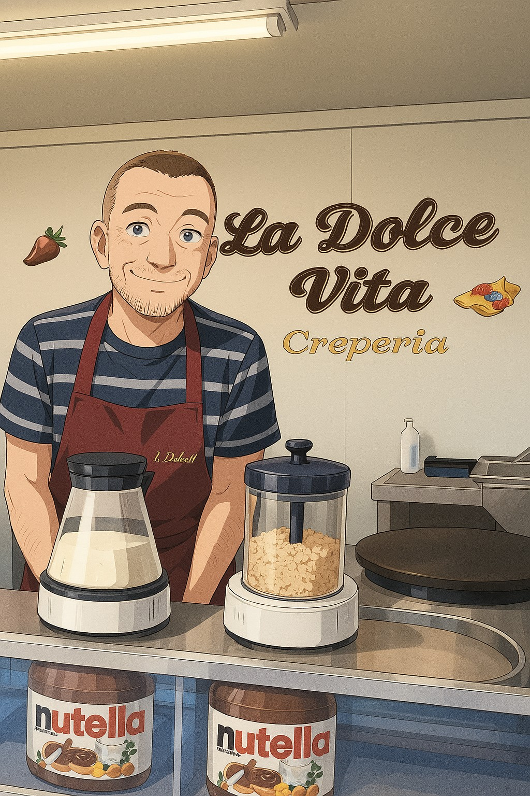

Über uns
La Dolce Vita ist ein Familienbetrieb, gegründet von Roberto Polimeno. Seine Leidenschaft ist es, Menschen ein
Lächeln ins Gesicht zu zaubern – mit jedem Bissen. Roberto verwendet ausschließlich natürliche Zutaten aus der
Region. Die Teigmischung wird täglich frisch angerührt und jede Crêpe wird direkt vor Ihren Augen zubereitet – mit
Liebe, Handwerkskunst und einem Rezept, das seit über 80 Jahren in seiner Familie weitergegeben wird. Die Rezeptur
stammt aus Cursi, einer kleinen Stadt in Puglia, im Süden Italiens – berühmt für ihre traditionelle Crêpe-Kunst.
